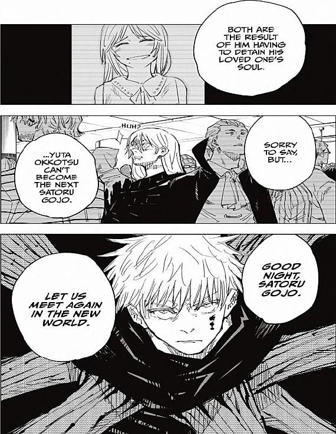
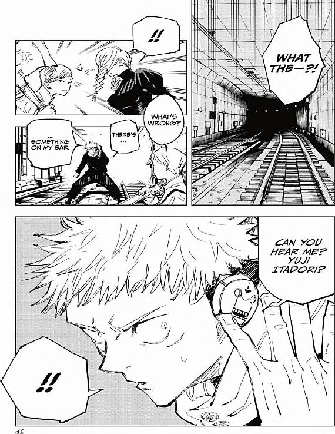

Jujutsu Kaisen Chapters 89-90
Home
Easy Access to the Manga
To view these pages on the internet archive,
click here
.

KENJAKU: BOTH ARE THE RESULT OF HIM HAVING TO DETAIN HIS LOVED ONE'S SOUL.
SORRY TO SAY BUT...
YUTA OKKOTSU CAN'T BECOME THE NEXT SATORU GOJO.
GOOD NIGHT, SATORU GOJO.
LET US MEET AGAIN IN THE NEW WORLD.

YUJI: WHAT THE-?!
UI UI: !!
WHAT'S WRONG?
YUJI: THERE'S...
...SOMETHING ON MY EAR.
MUTA: CAN YOU HEAR ME? YUJI ITADORI?
YUJI: !!
Pages 48-49 of Jujutsu Kaisen Chapter 90 Volume 11